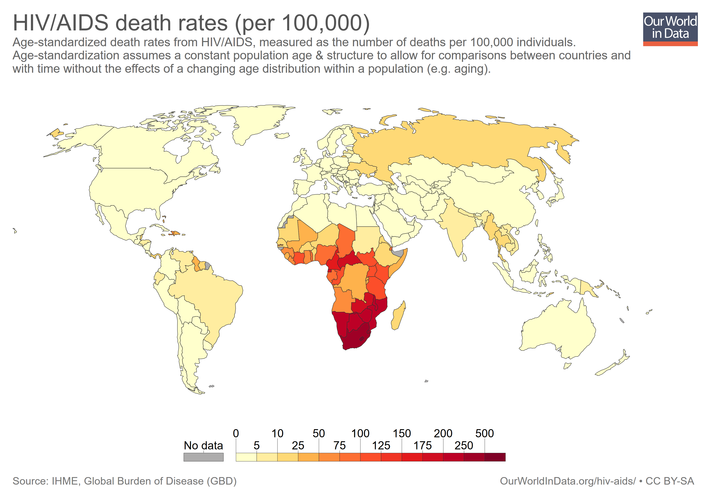

What are Vaccines?
You have probably heard of and been given vaccinations many times in your life, but what exactly are vaccines? Vaccines are injections of specific molecules that appear on all pathogens, or the pathogen itself. A pathogen is an organism that is foreign and can cause disease. All pathogens have antigens, foreign proteins that the body’s immune system uses to recognize and destroy pathogens. Antigens are present on the surface of the pathogen’s membrane (surface layer), whether it is a bacteria or virus does not matter but all different species of pathogens have different antigens. Vaccines train your body’s immune system to recognize and destroy these antigens, so that when a real infection occurs your body will already know how to beat it.
History of Vaccines
Vaccines were discovered and popularized in the West by Edward Jenner, a British physician, in 1796. Edward Jenner based his first vaccination, for the disease smallpox, on the practice of variolation developed in India and China. Variolation involves deliberately infecting healthy people with pathogens from someone who is already sick but with only a mild infection . This practice was based on the idea that smallpox was observed to infect people only once in a lifetime -- after one infection a person was immune for the rest of their life. This led to the idea of deliberately infecting people with the deadly smallpox, but with a milder infection originating from someone who had naturally gotten a mild infection. This did indeed create an immunity from smallpox.
Edward Jenner had observed that a infection of cowpox results in the host also developing immunity for smallpox. Taking into account the practice of variolation, Edward Jenner hypothesized that cowpox could be utilized to infect people and create an immunity for smallpox deliberately. Although this was a crude method to vaccinate, it worked and smallpox became much less prevalent.
Much more work had to be done, this is where Louis Pasteur comes into the scene. Louis Pasteur was a genius who invented pasteurization, the process of heating beverages to kill bacteria. He disproved the spontaneous generation theory and researched vaccines, creating a field called immunology. Pasteur created the vaccine for anthrax, a disease that was killing sheep at the time. He performed a controlled experiment, and injected infected sheep with a weak virulent strain of the disease which he had developed. The results were astoundingly clear! Those injected survived, while nearly all the sheep not vaccinated died. Later he built on his reputation by also creating a vaccine for rabies, a disease transmitted by the bite of a dog.
How do Vaccines work?
Vaccines work differently depending on what type of vaccine they are. There are many different types of vaccines but all of them have the same goal; to train the body’s immune system to recognize and develop counters to specific antigens so that the body can develop immunity to a pathogen. Different types of vaccines include:
- Live Attenuated Vaccines
Live Attenuated Vaccines contain weakened pathogens, so the immune system can easily learn to recognize that specific antigen without the risk of an actual infection. Because it now recognizes it, the next time that pathogen tries to attack, your immune system will recognize it and destroy it quickly. However, people with immunodeficiency diseases like HIV or SCIDS are at risk when taking vaccines because the immune system may be weakened to a point where even severely weakened pathogens are able to beat the immune system.
- Subunit Vaccines
Subunit vaccinations are vaccinations that do not contain a pathogen at all. This type of vaccination only injects a pathogen’s antigens into the body. The body can detect these antigens and develop antibodies against it and recognize it if attacked by them in future. These vaccinations are advantageous over Live Attenuated Vaccines because they do not run the risk of injecting live pathogen into the body, which could be harmful for people with weakened immune systems.
- Inactivated Vaccines
Inactive vaccinations are similar to live attenuated vaccines, however the microbes that reside in it are completely dead, and do not have any effect on the body other than to establish the immunity for that disease. Since the pathogens are dead It shares the advantages that subunit vaccinations have.
Can diseases be eradicated?
Diseases that are most affected by vaccines are those which only can have humans as hosts. This is because if all the humans that are potential targets of the disease are vaccinated, then the disease will get eradicated. The pathogen will have no place to reproduce and no way to spread.
One example of such a disease is smallpox. Smallpox was thought to have been eradicated due to a movement by the World Health Organization (WHO) in 1967. By 1980, smallpox was declared eradicated by the WHO. However, there are concerns that smallpox could return. The reasons behind the concerns are buried in the permafrost of Siberia. Siberia had a smallpox epidemic about 120 years ago, killing up to 40% of people in towns. Now, as the permafrost melts, the bodies buried there that had died due to smallpox may resurface and still harbor some pathogens. Bodies uncovered so far have not had any pathogens in them, but fragments of the DNA of smallpox has been found in the victim’s cells. This and rising popularity of the anti-vaccination movement, discussed later in this article, may cause smallpox to gain a foothold and cause another epidemic. Additionally US and Russian military laboratories have frozen samples of smallpox for future scientific study and other reasons. These could potentially be released into the wild, resulting in the resurgence of the disease.
Another example of a disease thought to have been eradicated by vaccines is polio. Polio is a disease affecting only humans as well. Polio attacks the nervous system, causing headaches, fevers, etc. Sometimes, polio can even cause the permanent paralysis of limbs, muscles, lungs, and throat. Polio has nearly been eliminated with rates falling 99% since 1980 due to a vaccine. However, it is still a problem in some middle eastern countries including Pakistan and Afghanistan. Nigeria also had almost eradicated polio by 2015. The polio virus spread from Nigeria to Somalia resulting in two separate outbreaks of polio.
The Flu Virus
Why does the flu need a different vaccination every year? Shouldn’t one vaccination grant lifelong immunity? The flu viruses must be vaccinated every year because the virus undergoes high mutation rates. This means that everytime the virus replicates, it usually has some genetic differences. This can be compared to one having inherent differences from their parents, so that their personal characteristics are a mix of the characteristics of their parents and not identical to any one or both of them. However, since the virus replicates so quickly and in such large quantities, it mutates more per replication. This means that it is more likely to mutate when it replicates. When it mutates, the virus may undergo a process called antigenic drift, in which the antigens on the surface of the virus also mutate. This means that the immune system no longer recognizes it and can no longer defend against it.
Another process that may happen is antigenic shift. This process causes a large shift in the viruses genes from what the immune system can recognize, which can infect most people. Antigenic shifts are much rarer but can be more deadly, as they occur very quickly and cause a pandemic. To combat these shifts in the genes of the flu, you are given a new vaccination for the flu every year.
HIV: Why is it so deadly?
The Acquired Immunodeficiency Syndrome (AIDS) epidemic is one of the deadliest in history and prevalent in many parts of Africa and Southeast Asia. It is caused by the HIV virus, which targets the Helper T Cells of the immune system. Helper T Cells activate the immune system’s response towards specific bacteria. Without the Helper T Cells, the body cannot defend well against infections, only being able to use defenses which it uses against all microbes - nonspecific defenses. When the immune system is compromised the condition is called AIDS. AIDS does not cause death, however since it weakens the immune system to such an extent that microbes in the body take advantage of the missing immune system and attacking it easily and ultimately causing death. AIDS has hit some countries so hard that instead of progressing down the demographic transition model, they have gone back a stage to high death rate and high birth rate.
Other than attributes that many viruses share such as frequent mutation, there are a few special reasons that the HIV virus is so hard to develop vaccines for. The first reason is that the HIV virus targets the immune system’s cells and the vaccines are useless without an immune system. This is also a problem because the immune system’s cells may get infected before it even realizes that HIV is in the cells. The second reason why it is so hard to develop vaccines for HIV is that it is a retrovirus. Retroviruses bury themselves into the DNA of the infected cell. In HIV’s case, it infects all of the helper T cells and inserts its own DNA into the cell’s DNA. When the cell replicates, the viral DNA is replicated with it. This means that most of the immune system’s cells can become infected with HIV without any symptoms. Then, HIV activates by hijacking the cell to produce its own viral components and assemble them. The trigger to this action is still unknown, which is another problem. Retroviruses such as HIV may stay in the body for 20 or more years before a trigger is activated. This means that during those 20 years, the virus can be passed on through bodily fluids to another person. This makes the HIV virus so very deadly. The third reason is that there is no natural immunity from HIV. This means that once the body is infected by HIV, there is no way to respond to it and the body will never develop an immunity to it like other diseases such as the flu and smallpox.
The Anti-Vaccination Movement
Anti-vaccination movements and leagues have existed ever since the first vaccines There are many different reasons put forth by people who are opposed to vaccinations (also called anti-vaxxers). For instance, those who were opposed to the smallpox vaccine when it was first developed put forth the following arguments opposing vaccines:
- That the vaccine included scoring one's flesh and seemingly drawing blood, doing more harm than good
- That transferring fluids from one body to another was considered to be unfaithful to your religion
- At the time of the smallpox vaccine, the spontaneous generation theory had not yet been disproved by Louis Pasteur, and people thought that smallpox came from a bad atmosphere
Over time, in many countries laws were enacted to make vaccination mandatory for small children, and also to enforce public safety.
The public opinion of vaccinations has changed by the 1970s again. There was a controversy over immunizations for Diphtheria, Tetanus and Pertussis from a hospital in the United Kingdom. This was centered around children getting conditions involving the nervous system. Although an investigation revealed that the vaccinations were completely safe, the public was still not convinced. This was in part due to different people in the medical professions having mixed opinions about vaccinations.
Just about three decades later, in 1998, another controversy arose, this time about the vaccine for Mumps, Measles, and Rubella. There were allegations of the vaccine causing autism or other diseases. Andrew Wakefield, a doctor from the UK was at the center of these claims. It was later found out that he had been bribed to say such things to support a family’s claim in a lawsuit.
More recently campaigns gained foothold to remove a compound containing small amounts of mercury from vaccinations. Thimerosal was blamed for causing autism because it contained traces of mercury. It was highlighted when vaccine manufacturers started to lower the amount used due to some concerns, just to be safe. Even though statements have been made that Thimerosal is safe, the public has not been convinced.
You may be wondering that if a few people don’t get vaccinated, then how is it that it affects populations more broadly. This is called Herd Immunity, a mechanism by which more people can be protected even if they are not vaccinated. If most of the population is vaccinated against a disease, it will be harder for the disease to spread to those that are not vaccinated, as they will statistically be more spread out and harder for the pathogens to find. However, decreasing the percentage of the population that is vaccinated makes it much easier for the disease to jump from person to person, and in rarer cases mutate to be able to infect vaccinated people too. However, due in part to social media, “anti-vaxxers” refuse to vaccinate themselves even with vaccinations that do not contain mercury compounds or are proven not to cause mental disorders.
Conclusion
Although anti vaccination movements have put the lives of many people at risk and brought down life expectancy in some communities overall vaccines have resulted in greater good of society and humanity as a whole. Vaccines have enabled humanity to develop strongly into a much safer world today. It has allowed us to successfully pass the filthy industrial revolution stage, and increased overall life expectancy. The HIV/AIDS epidemic has been a major problem for many countries, but thanks to ongoing scientific and biological research new vaccines can still be developed.
Works Cited
Great Lakes and Central U.S. Viewed From the International Space Station. (2017, August 7). Retrieved from https://www.nasa.gov/content/great-lakes-and-central-us-viewed-from-the-international-space-station
HIV Death Rates [Digital image]. (n.d.). Retrieved January 18, 2018, from https://ourworldindata.org/grapher/hiv-death-rates
T. (2017, February 20). How Herd Immunity Works [Digital image]. Retrieved January 18, 2018, from https://www.reddit.com/r/dataisbeautiful/comments/5v72fw/how_herd_immunity_works_oc/
Vaccine. (2018). In Encyclopædia Britannica. Retrieved from https://school.eb.com/levels/high/article/vaccine/74606
Edward Jenner. (2018). In Encyclopædia Britannica. Retrieved from https://school.eb.com/levels/high/article/Edward-Jenner/43524
Louis Pasteur. (2018). In Encyclopædia Britannica. Retrieved from https://school.eb.com/levels/high/article/Louis-Pasteur/108485
How Vaccines Work. (2016, May 27). Retrieved January 17, 2018, from http://www.publichealth.org/public-awareness/understanding-vaccines/vaccines-work/
Smallpox. (2018). In Encyclopædia Britannica. Retrieved from https://school.eb.com/levels/high/article/smallpox/68247
Influenza (Flu). (2017, September 27). Retrieved January 17, 2018, from https://www.cdc.gov/flu/about/viruses/change.htm
The Development of HIV Vaccines. (n.d.). Retrieved January 18, 2018, from https://www.historyofvaccines.org/content/articles/development-hiv-vaccines
History of Anti-vaccination Movements. (n.d.). Retrieved January 18, 2018, from https://www.historyofvaccines.org/content/articles/history-anti-vaccination-movements